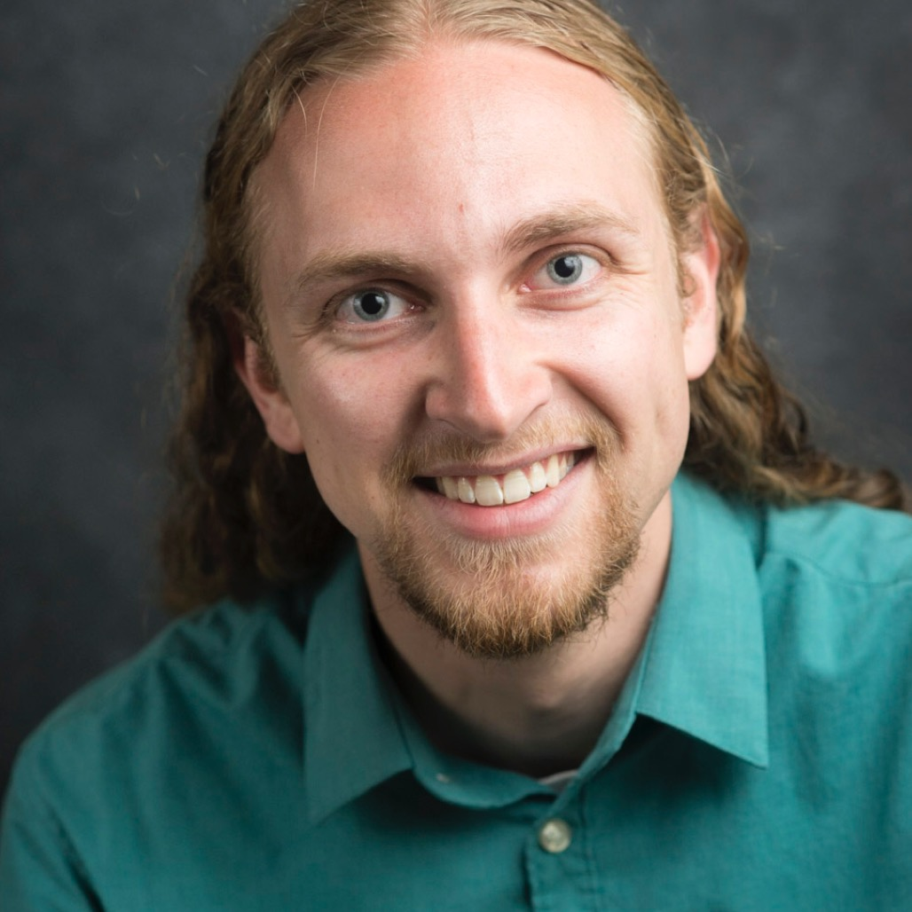
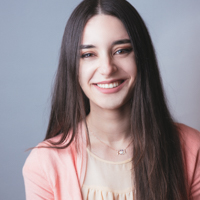
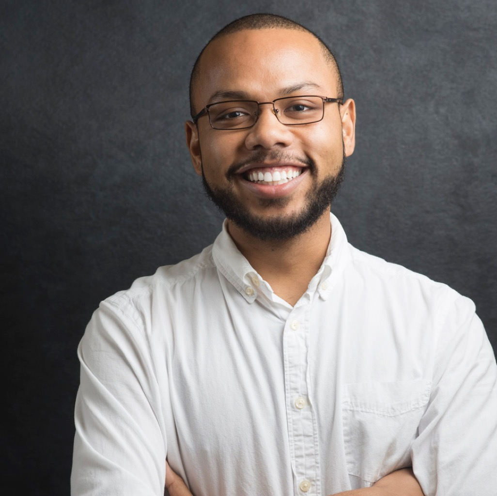
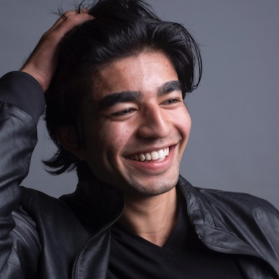
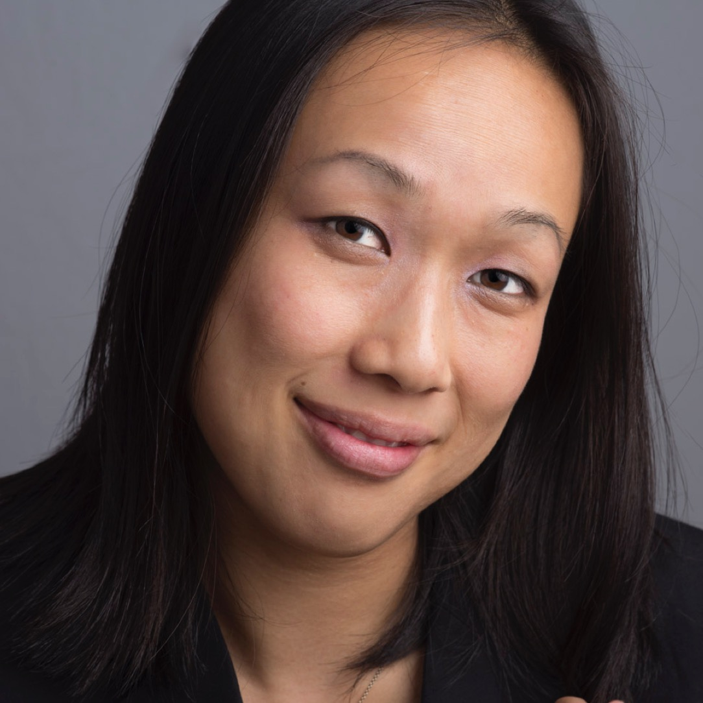
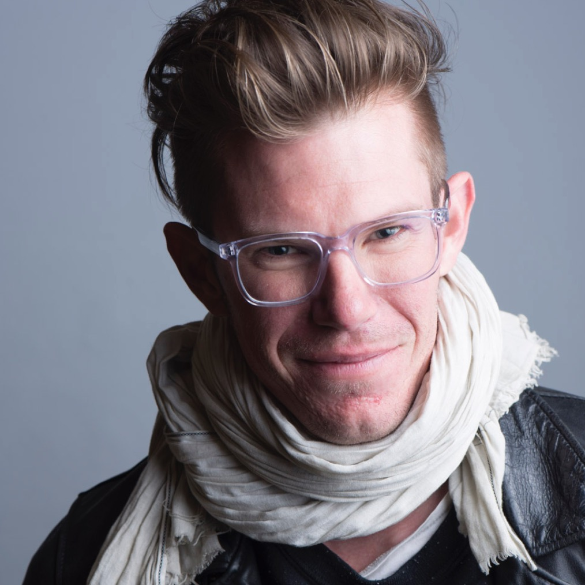
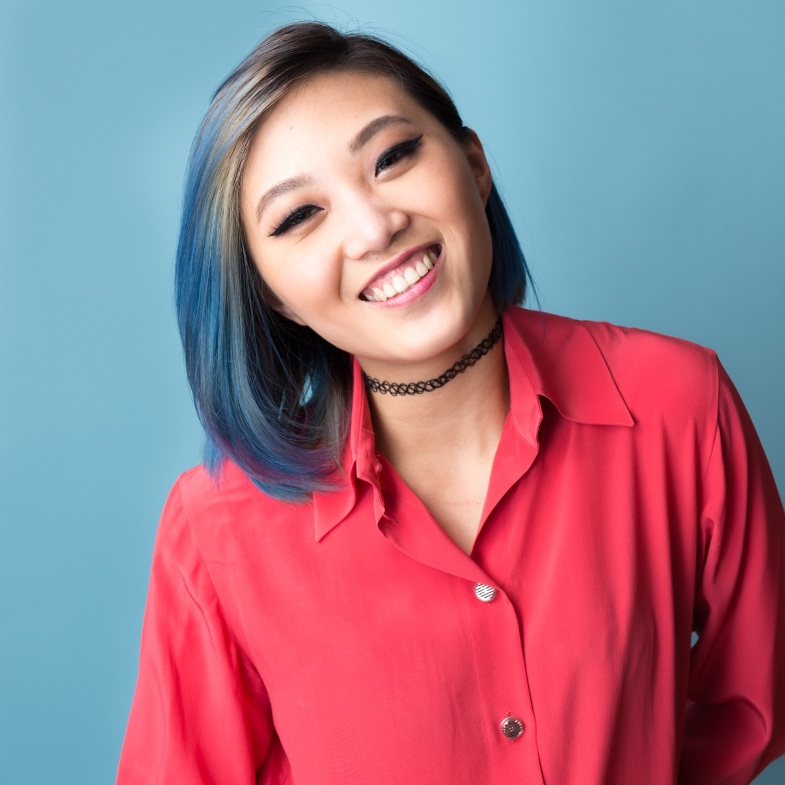
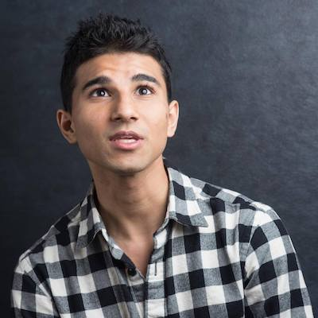
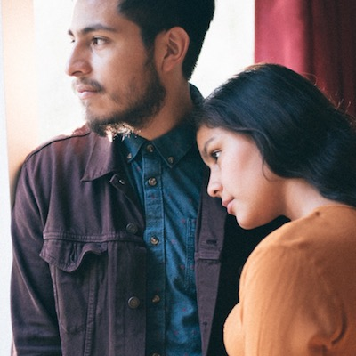

About Me...
Matt L. Wong (b. 1990) is a portrait and wedding photographer based in North Berkeley CA. His style is closely influenced by the last two generations of portrait photographers, including Timothy Greenfield-Sanders, Annie Leibovitz, and Richard Avedon. He received his B.S. in Civil and Environmental Engineering at the University of California, Davis and enjoys making websites and playing recreational squash on his spare time.
Testimonials
-
"Matt offers a comfortable portrait session with relaxed conversation to photograph you as yourself rather than you in your most awkward pose. His photographs are well-lit and well-composed. You'll have a range of images from which to choose - head shots, speaking "action " shots, and more. His turn around time is quick and you'll have a good time too."
—Letha C.
-

"A very interesting and different approach to photo shoots. The idea behind Highland Portraits is to capture you in your most natural states, rather than posing you. Matt will engage you in talking about your passions and interests and then capture you while speaking. He is very good at facilitating the conversation and picking out topics that will catch your natural self."
—Max V.
-

"As he took photos, he had a real conversation with me about my interests (one of which — Classical music - we conveniently happened to share!) and created a friendly atmosphere that made it feel like I was not posing too much. For that reason I feel the portraits he took of me looked natural and even captured my personality in surprising ways."
—Theodora M.
-

"Matt really likes to get the person relaxed and comfortable in front of the camera; he asks (in a respectful and non-intrusive way) about life goals, passions, dreams. This process, I believe, made the experience and the portraits more intimate and personal -- which is great if you want your pictures to capture the real you! :)"
—Keith W.
-

"Matt's strength lies in making you comfortable. He engages you and pays attention to the minor details such as posture and lighting without making it seem so. My afternoon session was incredibly enjoyable and within a matt of 20 minutes Matt captured a my full range emotions. I went in to capture myself in my natural habitat. Matt's work did that to perfection."
—Mohammad L.
-

"As a portrait photographer, Matt strikes the perfect balance between flexible and professional. While he was willing to accommodate all of my random requests, he also made sure to capture the formal/traditional poses and backgrounds. Post-session, I received a lot of follow-up regarding the proofs and photo-editing."
—Jo L.
-

"Matthew is such a great photographer! Additionally he has such a warm and welcoming personality he sets his subjects at ease instantly, making getting a great shot a breeze. I am usually very camera shy and Matthew was able to get several great pics of me with a variety of diffferent but very flattering expressions."
—Jai P.
-

"Matt is awesome! Really fun and interesting to work with! He is open minded and willing to work around your ideas, which is fantastic if you want to put in your own ideas. I'm happy to see all the results! Can't wait to work with him again."
—Wendy Z.
-

"Matt did a great job, and I saw for the first time that you can talk and get great pictures. I also got what is maybe the only picture of my Duchenne smile (the genuine smile)."
—Alok S.
-

"Matt Wong is amazing. My boyfriend and I had a photography session with him and it was absolutely amazing. Matt took us to a beautiful site in Northern Berkeley and took priceless photographs of us. I am so excited to refer him to my friends and family. This is definitely a number I am holding on to. I am eternally grateful and his great work will be framed for years to come."
—Karen A.